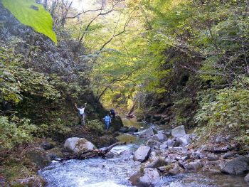

Iwaki Star WatchingNov 4-5, 2006(organized by Alok)Photos & Report by Alok |
|
at Mt. Takine-san (above) |
||
|
We had a vareity trip
last weekend, climbing a mountain, visiting caves, and walking in a
river gorge. And, of course, moon watching in the night (after a
gorgeous dinner)! Three of the participants had to drop out at the last moment, and so we were 11, 9 of us leaving in two cars in the morning, and two carrying telescopes after noon. It was a net 600 m climb to the top of 1200 m high Takine-san, complete with chains and ladders. Some members complained that it should not have been rated just one star. I considered it and revised the rating to two stars (with immediate effect). After all, most members were drawn to this walk for its one star rating! Camilla completed only one star credit on the first day, but she made up for this shortfall at the river gorge the next day. After a gala dinner and relaxing bath, we set out in yukatas to set up the telescopes. We had a nice view of the moon, with shades of clouds running across its face like changing emotions. And then we had views of some windows, and could clearly examine the dust and the cracks on them, but nothing through them. A detailed report from James is expected soon. After a gorgeous breakfast we drove along the river Natsui, stopping at some waterfalls in autumn setting, and finally arriving at the river gorge, well known in our club as "Iwaki waterfalls," where we make a pilgrimage every summer with Victor. At this time of the year, the top had beginning to color, but the autumn had not set in deeper inside. |
||
|
inside Abukuma caves |
setting up the telescope |
|
|  | ||
|
in the Natsui river gorge (Iwaki waterfalls) |